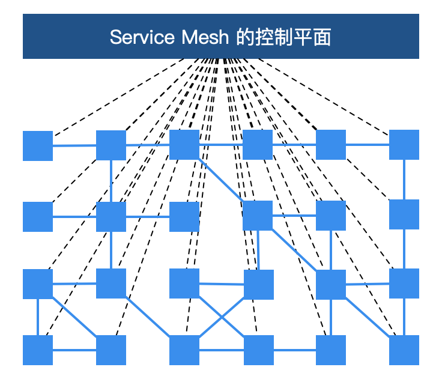

简介
概述
微服务架构可谓是当前软件开发领域的技术热点，它在各种博客、社交媒体和会议演讲上的出镜率非常之高，无论是做基础架构还是做业务系统的工程师，对微服务都相当关注，而这个现象与热度到目前为止，已经持续了近 5 年之久 尤其是近些年来，微服务架构逐渐发展成熟，从最初的星星之火到现在的大规模的落地与实践，几乎已经成为分布式环境下的首选架构。微服务成为时下技术热点，大量互联网公司都在做微服务架构的落地和推广。同时，也有很多传统企业基于微服务和容器，在做互联网技术转型 而在这个技术转型中，国内有一个趋势，以 Spring Cloud 与 Dubbo 为代表的微服务开发框架非常普及和受欢迎。然而软件开发没有银弹
基于这些传统微服务框架构建的应用系统在享受其优势的同时，痛点也越加明显。这些痛点包括但不限于以下几点：
- 侵入性强 ：想要集成 SDK 的能力，除了需要添加相关依赖，往往还需要在业务代码中增加一部分的代码、或注解、或配置；业务代码与治理层代码界限不清晰
- 升级成本高 ：每次升级都需要业务应用修改 SDK 版本，重新进行功能回归测试，并且对每一台机器进行部署上线，而这对于业务方来说，与业务的快速迭代开发是有冲突的，大多不愿意停下来做这些与业务目标不太相关的事情
- 版本碎片化严重 ：由于升级成本高，而中间件却不会停止向前发展的步伐，久而久之，就会导致线上不同服务引用的 SDK 版本不统一、能力参差不齐，造成很难统一治理
- 中间件演变困难 ：由于版本碎片化严重，导致中间件向前演进的过程中就需要在代码中兼容各种各样的老版本逻辑，带着 “枷锁” 前行，无法实现快速迭代
- 内容多、门槛高 ：Spring Cloud 被称为微服务治理的全家桶，包含大大小小几十个组件，内容相当之多，往往需要几年时间去熟悉其中的关键组件。而要想使用 Spring Cloud 作为完整的治理框架，则需要深入了解其中原理与实现，否则遇到问题还是很难定位
- 治理功能不全 ：不同于 RPC 框架，Spring Cloud 作为治理全家桶的典型，也不是万能的，诸如协议转换支持、多重授权机制、动态请求路由、故障注入、灰度发布等高级功能并没有覆盖到。而这些功能往往是企业大规模落地不可获缺的功能，因此公司往往还需要投入其它人力进行相关功能的自研或者调研其它组件作为补充。
以上列出了传统微服务框架的局限性，但这并不意味着它们就一无是处了 在中小企业，采用 Spring Cloud 这样的传统微服务框架已经可以满足绝大部分服务治理的需求，并且借此快速推进微服务化改造 这些痛点往往是技术发展到一定的程度必然要经历的阶段，这些痛点促使技术不断发展、不断前进
基本概念
Service Mesh 一词最早由开发 Linkerd 的 Buoyant 公司提出，并于 2016 年 9 月29 日第一次公开使用了这一术语 William Morgan，Buoyant CEO，对 Service Mesh 这一概念定义如下： A service mesh is a dedicated infrastructure layer for handling service-to-service communication. It’s responsible for the reliable delivery of requests through the complex topology of services that comprise a modern, cloud native application. In practice, the service mesh is typically implemented as an array of lightweight network proxies that are deployed alongside application code, without the application needing to be aware
翻译成中文如下：
Service Mesh 是一个专门处理 服务通讯 的 基础设施层 。它的职责是在由 云原生应用 组成服务的复杂拓扑结构下进行 可靠的 请求传送 。在实践中，它是一组和应用服务部署在一起的 轻量级的网络代理 ，并且对应用服务 透明 。以上这段话有四个关键点：
- 本质：基础设施层
- 功能：请求分发
- 部署：网络代理
- 特点：透明
2017 年，随着 Linkerd 的传入，Service Mesh 进入国内社区的视野，并且由国内的技术布道师们翻译成“服务网格”
架构
服务网格从总体架构上来讲比较简单，不过是一堆紧挨着各项服务的用户 代理 ，外加一组 任务管理流程 组成：
- 代理：在服务网格中被称为 数据层 或 数据平面 （data plane）， 截获 不同服务之间的调用并对其进行 处理
管理流程：被称为 控制层 或 控制平面 （control plane）， 协调 代理的行为，并为运维人员提供 API，用来操控和测量整个网络

更进一步地说，服务网格是一个专用的基础设施层，旨在“在微服务架构中实现可靠、快速和安全的服务间调用”。它不是一个“服务”的网格，而是一个“代理”的网格，服务可以插入这个代理，从而使网络抽象化。在典型的服务网格中：
- 这些代理作为一个 sidecar （边车）被 注入 到每个 服务部署 中
- 服务不直接通过网络调用服务，而是 调用 它们 本地的 sidecar 代理 ，而 sidecar 代理又代表服务 管理请求 ，从而封装了服务间通信的复杂性
- 相互连接的 sidecar 代理集 实现了所谓的数据平面，这与用于 配置代理 和 收集指标 的服务网格组件（控制平面）形成对比
总而言之，Service Mesh 的基础设施层主要分为两部分： 控制平面 与 数据平面 当前流行的两款开源服务网格 Istio 和 Linkerd 实际上都是这种构造
控制平面的特点：
- 不直接解析数据包
- 与控制平面中的代理通信，下发策略和配置
- 负责网络行为的可视化
- 通常提供 API 或者命令行工具可用于配置版本化管理，便于持续集成和部署。
数据平面的特点：
- 通常是按照无状态目标设计的，但实际上为了提高流量转发性能，需要缓存一些数据，因此无状态也是有争议的
- 直接处理入站和出站数据包，转发、路由、健康检查、负载均衡、认证、鉴权、产生监控数据等
- 对应用来说透明，即可以做到无感知部署
影响
那么服务网格的出现带来了哪些变革呢？
- 微服务治理与业务逻辑的解耦 ：服务网格把 SDK 中的大部分能力从应用中剥离出来，拆解为独立进程，以 sidecar 的模式进行部署。服务网格通过将服务通信及相关管控功能从业务程序中分离并下沉到基础设施层，使其和业务系统完全解耦，使开发人员更加专注于业务本身
注意，这里提到了一个词“大部分”，SDK 中往往还需要保留协议编解码的逻辑，甚至在某些场景下还需要一个轻量级的 SDK 来实现细粒度的治理与监控策略 例如，要想实现方法级别的调用链追踪，服务网格则需要业务应用实现 trace ID 的传递，而这部分实现逻辑也可以通过轻量级的 SDK 实现 因此，从代码层面来讲，服务网格并非是零侵入的
- 异构系统的统一治理 ：随着新技术的发展和人员更替，在同一家公司中往往会出现不同语言、不同框架的应用和服务，为了能够统一管控这些服务，以往的做法是为每种语言、每种框架都开发一套完整的 SDK，维护成本非常之高，而且给公司的中间件团队带来了很大的挑战。有了服务网格之后，通过将主体的服务治理能力下沉到基础设施，多语言的支持就轻松很多了。只需要提供一个非常轻量级的 SDK，甚至很多情况下都不需要一个单独的 SDK，就可以方便地实现多语言、多协议的统一流量管控、监控等需求
优点
服务网格相对于传统微服务框架，还拥有三大技术优势：
- 可观察性：因为服务网格是一个专用的基础设施层，所有的服务间通信都要通过它，所以它在技术堆栈中处于独特的位置，以便在服务调用级别上提供统一的遥测指标。这意味着，所有服务都被监控为“黑盒”。服务网格捕获诸如来源、目的地、协议、URL、状态码、延迟、持续时间等线路数据
这本质上等同于 web 服务器日志可以提供的数据，但是服务网格可以为所有服务捕获这些数据，而不仅仅是单个服务的 web 层 需要指出的是，收集数据仅仅是解决微服务应用程序中可观察性问题的一部分，存储与分析这些数据则需要额外能力的机制的补充，然后作用于警报或实例自动伸缩等
- 流量控制：通过 Service Mesh，可以为服务提供智能路由（蓝绿部署、金丝雀发布、A/B test）、超时重试、熔断、故障注入、流量镜像等各种控制能力
以上这些往往是传统微服务框架不具备，但是对系统来说至关重要的功能 例如，服务网格承载了微服务之间的通信流量，因此可以在网格中通过规则进行故障注入，模拟部分微服务出现故障的情况，对整个应用的健壮性进行测试 由于服务网格的设计目的是有效地将来源请求调用连接到其最优目标服务实例，所以这些流量控制特性是“面向目的地的”，这正是服务网格流量控制能力的一大特点
- 安全：在某种程度上，单体架构应用受其单地址空间的保护。然而，一旦单体架构应用被分解为多个微服务，网络就会成为一个重要的攻击面。更多的服务意味着更多的网络流量，这对黑客来说意味着更多的机会来攻击信息流。而服务网格恰恰提供了保护网络调用的能力和基础设施。服务网格的安全相关的好处主要体现在以下三个核心领域： 服务的认证 、 服务间 通讯的加密 、 安全相关策略的强制执行
缺点
然而就像之前说的软件开发没有银弹，传统微服务架构有许多痛点，而服务网格也不例外，也有它的局限性：
- 增加了复杂度：服务网格将 sidecar 代理和其它组件引入到已经很复杂的分布式环境中，会极大地增加整体链路和操作运维的复杂性
- 运维人员需要更专业：在容器编排器（如 Kubernetes）上添加 Istio 之类的服务网格，通常需要运维人员成为这两种技术的专家，以便充分使用二者的功能以及定位环境中遇到的问题
- 延迟：从链路层面来讲，服务网格是一种侵入性的、复杂的技术，可以为系统调用增加显著的延迟。这个延迟是毫秒级别的，但是在特殊业务场景下，这个延迟可能也是难以容忍的
- 平台的适配：服务网格的侵入性迫使开发人员和运维人员适应高度自治的平台并遵守平台的规则
总结
展望未来，Kubernetes 正在爆炸式发展，它已经成为企业应用的容器编排的首选 如果说 Kubernetes 已经彻底赢得了市场，并且基于 Kubernetes 的应用程序的规模和复杂性持续增加，那么就会有一个临界点，而服务网格则将是有效管理这些应用程序所必需的 随着服务网格技术的持续发展，其实现产品（如 Istio）的架构与功能的不断优化，服务网格将完全取代传统微服务架构，成为大小企业微服务化和上云改造的首选架构